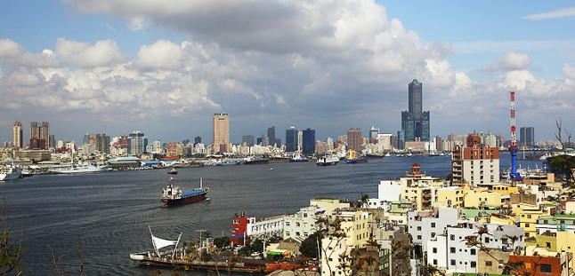
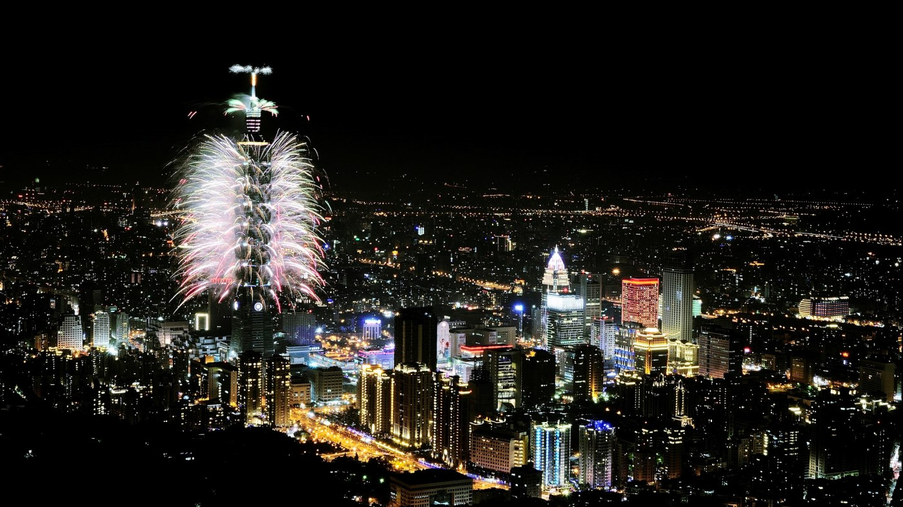
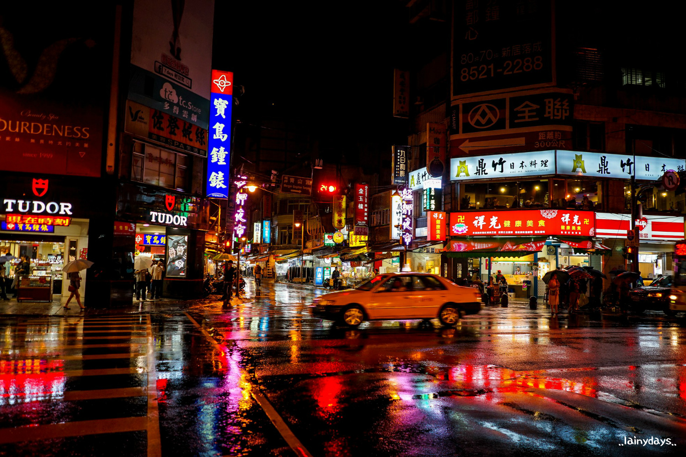

가오슝에서 가장 먼저 눈에 들어오는 거대한 컨테이너와 이를 활발하게 나르는 지게차의 모습은 이른바 항구도시로서의 면모이다. 하지만 이내 그 속에 숨어 있는 다양한 역사의 발자취와 현대적인 감각미는 색다른 풍경으로 다가온다. 가오슝 시내 중심가에 위치한 85층 높이의 동띠스 빌딩과 왁자지껄한 야시장이 현대적인 위상을 의미한다면, 도심 곳곳에 자리 잡은 불교 사찰과 풍성한 자연 녹지, 그리고 시즈완의 석양은 여행자에게 따뜻한 감성을 선사한다.
중국과 일본의 문화가 융합된 도시 타이페이. 애니메이션 ‘센과 치히로의 행방불명'의 배경이 된 지우펀, 예 류 지질공원, 101빌딩이 대표적인 관광 명소로 손꼽힌다. 스린야시장을 걸으며 맛집을 찾아다니는 것은 여행객들에게 인기 있는 관광 코스이기도 하다. 지하철과 버스를 이용해 도시를 차근차근 둘러보기 좋아 젊은 배낭 여행객들에게 인기 좋은 여행지이다.
지하철 시먼역 6번 출구와 연결되는 거리로 나서면 대형 쇼핑센터와 백화점을 비롯하여 의류점·신발점·화장품점·음반점·문신점·연예인 물품점·노래방·피겨점·문신점 등 다양한 상점이 빼곡히 들어서 있다. 또한 20여 개의 영화 상영관이 밀집한 극장가로도 유명하며, 거리 곳곳에 먹거리를 위주로 한 노점상이 6000여 개에 달한다. 유명 연예인의 사인회나 프로모션, 소규모 콘서트 등도 자주 열려 젊은 층이 즐겨 찾는다.
